Native One Time Passwords (OTP) - NetScaler Gateway 12 / Citrix Gateway 12.1
Navigation
- Change Log
- Overview
- LDAP Policies/Actions
- Login Schemas
- Authentication PolicyLabel
- AAA vServer
- Traffic Policy for Single Sign-on
- NetScaler Gateway and Authentication Profile
- Update Content Switching Expression for Unified Gateway
- Manageotp
- CLI Commands
Change Log
- 2019 Feb 4 - Login Schemas - added link to Morten Kallesoee n-Factor – restrictions on native OTP management
-
2018 Oct 6 - Overview - Workspace app 1809 and newer with Citrix Gateway (NetScaler) 12.1 build 49 and newer support nFactor (and OTP) authentication.
- Updated screenshots for Citrix ADC 12.1
- 2018 June 15 - Login Schemas - added link to Stan Demburg NetScaler Native OTP – Prevent Enrollment Of Additional Devices Externally
- 2018 Mar 18 - in the Traffic Policy section, added info from Julien Mooren NetScaler – Native OTP is breaking SSL VPN.
Overview
NetScaler Native OTP lets you enable two-factor authentication without purchasing any other authentication product. A typical configuration uses Google Authenticator to generate Passcodes. See the following for an overview:
- Citrix Blog Post NetScaler Unified Gateway Provides One Time Password (OTP), Natively
- Citrix Docs Native OTP support for authentication
Here are some notes:
- NetScaler Native OTP is part of nFactor, and thus requires Citrix ADC Advanced Edition (aka NetScaler Enterprise Edition) or Citrix ADC Premium Edition (aka NetScaler Platinum Edition) licensing. NetScaler ADC Standard Edition licensing is not sufficient.
- Workspace app 1809 and newer with Citrix Gateway (NetScaler) 12.1 build 49 and newer support nFactor authentication. Older Receivers and older NetScalers don't support it, so you'll instead have to use a web browser. :idea:
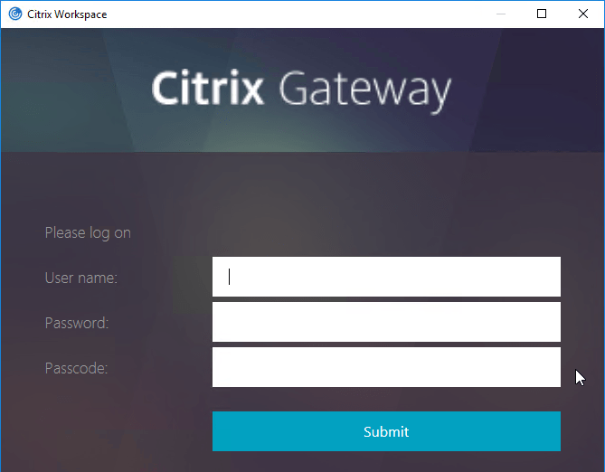
- Citrix Gateway VPN Plug-in 12.1 build 49 and later support nFactor when authenticating using the VPN Plug-in. :idea:
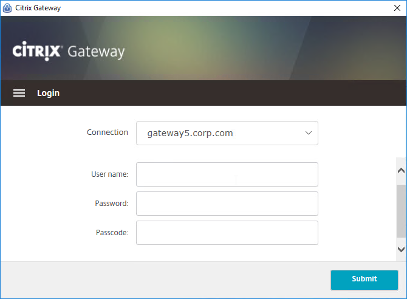
- nFactor requires a AAA vServer, which can be non-addressable - you don't need any additional public IPs.
-
OTP stores device enrollment secrets in an Active Directory attribute that accepts Strings. Citrix's documentation uses the userParameters Active Directory attribute.
- The LDAP bind account must have permission to modify this attribute on every user.
- Users can enroll multiple devices. There's no way to prevent this.
- The manageotp website is usually only protected by single factor authentication. Since users can add multiple devices, the manageotp website must be protected from external access.
- Christian in the comments indicated that Microsoft Authenticator also works. Click on plus sign -> other (Google,…).
Here are the OTP configuration objects:
- Make sure NTP is configured on the NetScaler. Accurate time is required.
-
An LDAP Policy/Server with authentication disabled and OTP Secret configured. This one OTP-specific LDAP Policy/Server can be used for two scenarios:
- manageotp device enrollment
- Two-factor authentication to NetScaler Gateway after a device has been enrolled. This LDAP Policy/Server verifies the entered passcode.
-
An LDAP Policy/Server with authentication enabled. This one policy is used for two scenarios:
-
Single-factor authentication to the manageotp authenticator/device enrollment website.
- Two-factor authentication to NetScaler Gateway after a device has been enrolled.
-
A single non-addressable AAA vServer with two Login Schemas for the following scenarios:
-
A single-factor Login Schema for manageotp.
- A dual-factor Login Schema for NetScaler Gateway authentication.
- An Authentication Profile to link the AAA vServer to the NetScaler Gateway vServer.
LDAP Policies/Actions
- Go to Security > AAA - Application Traffic > Polices > Authentication > Advanced Policies > Actions > LDAP.
- On the right, click Add.
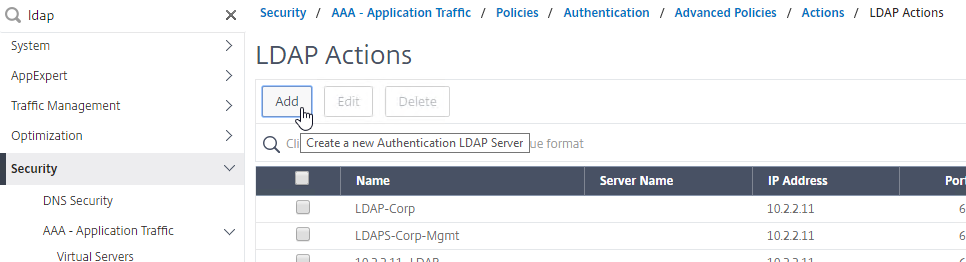
- Create a normal LDAP Server if you don't have one already. This one has Authentication enabled. This LDAP Policy/Server will be used for single-factor authentication to the manageotp website, and for first factor of dual-factor authentication to NetScaler Gateway (second factor is OTP). There are no special instructions for this LDAP Server.
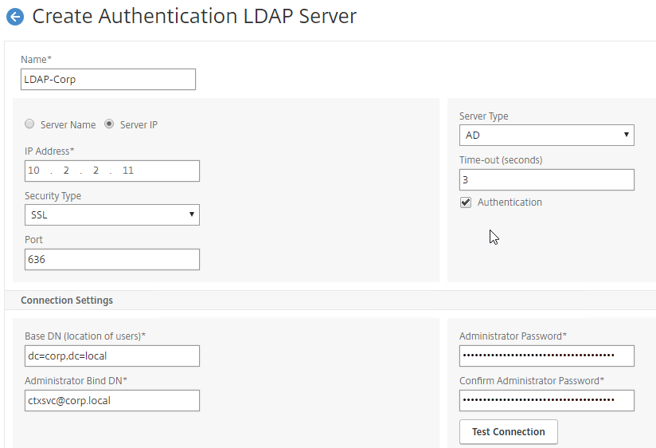
- Create a normal LDAP Server if you don't have one already. This one has Authentication enabled. This LDAP Policy/Server will be used for single-factor authentication to the manageotp website, and for first factor of dual-factor authentication to NetScaler Gateway (second factor is OTP). There are no special instructions for this LDAP Server.
- Create another LDAP Action.
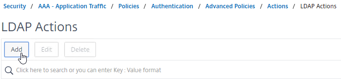
- This one is used by the manageotp site to set the OTP authenticator in Active Directory, so name it accordingly.
- On the right, uncheck the box next to Authentication. If you don't uncheck it, you will see an error message after configuring the OTP Secret.
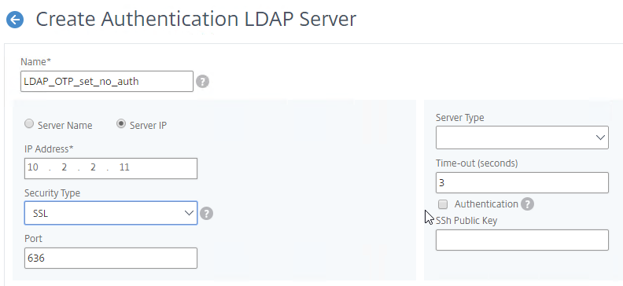
- Make sure the Administrator Bind DN has permissions to modify the OTP Secret Active Directory attribute for all users.
- If you cloned an existing LDAP Server, then make sure you re-enter the Administrator Password or the new one won't work. Then click Test LDAP Reachability.
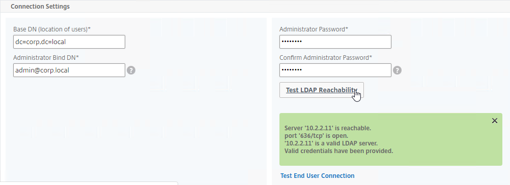
- Configure the Server Logon Name Attribute to match the one you configured in the normal authentication LDAP Server.
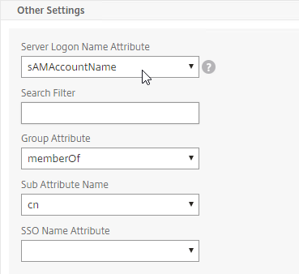
- In the Other Settings section, on the bottom right, find the OTP Secret field. Enter the name of the Active Directory attribute where NetScaler will store the user's OTP secret. You can use the userParameters attribute if that attribute isn't being used for anything else.
- Thomas Rolfs in the comments advises not to enable Nested Group Extraction in this LDAP Action.
- Click Create when done.
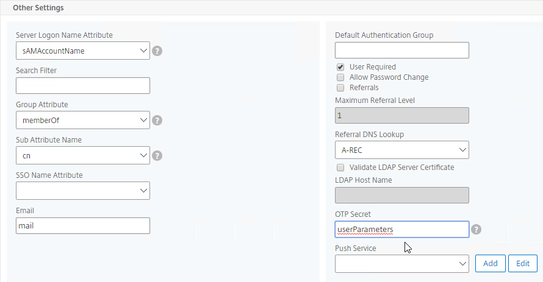
-
Create another LDAP Action.
- This one will verify the OTP code entered by the user, so name it accordingly. The only difference from the prior one is the addition of an LDAP Search Filter.
- On the right, uncheck the box next to Authentication. If you don't uncheck it, you will see an error message after configuring the OTP Secret.
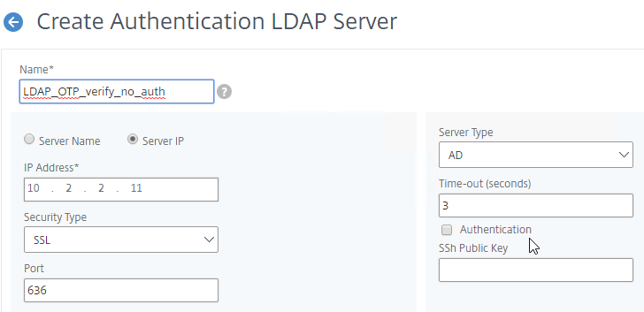
- Make sure the Administrator Bind DN has permissions to read the OTP Secret Active Directory attribute.
- If you cloned an existing LDAP Server, then make sure you re-enter the Administrator Password or the new one won't work.
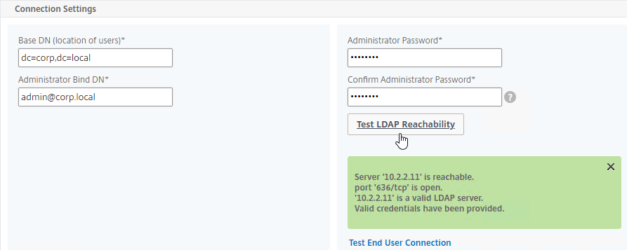
- In the Other Settings section, configure the Server Logon Name Attribute to match the one you configured in the normal authentication LDAP Server.
- In the Search Filter field, enter the text userParameters>=#@. This syntax ensures that only users with enrolled authenticators can login. See George Spiers NetScaler native OTP for more info.
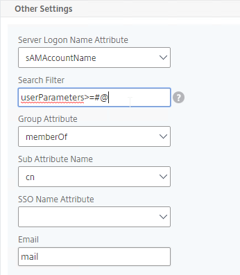
- In the Other Settings section, on the bottom right, find the OTP Secret field. Enter the name of the Active Directory attribute containing the user's OTP secret.
- Click Create when done.
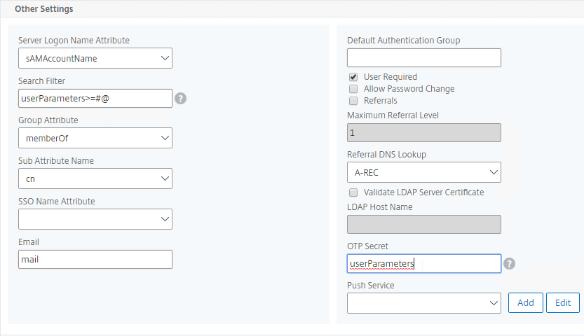
- Go to Security > AAA - Application Traffic > Policies > Authentication > Advanced Policies > Policy.
- On the right, click Add.
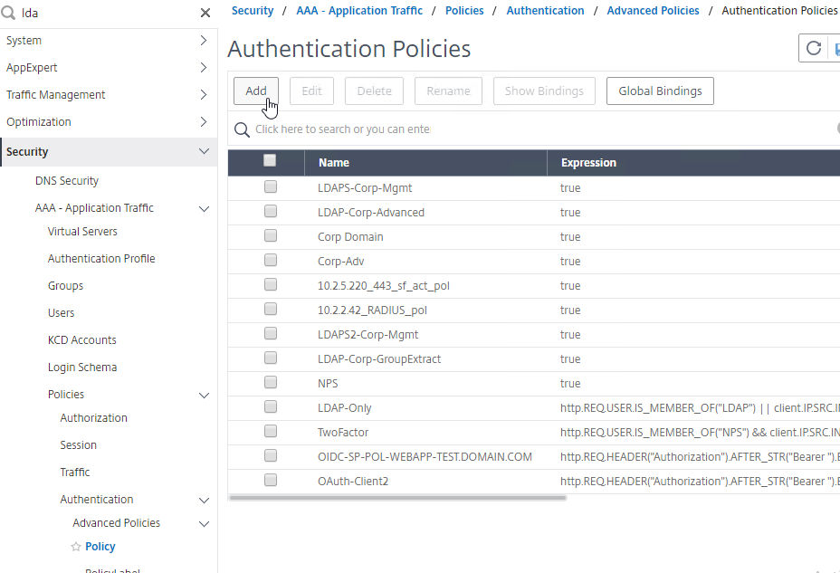
- You probably don't already have an Advanced Authentication Policy for your normal LDAP server.
- Change the Action Type to LDAP.
- Select your normal LDAP server, which is the one that has Authentication enabled.
- Enter true as the expression. This uses Default Syntax instead of Classic Syntax.
- Click Create.
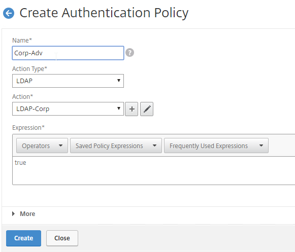
- Create another Authentication Policy.
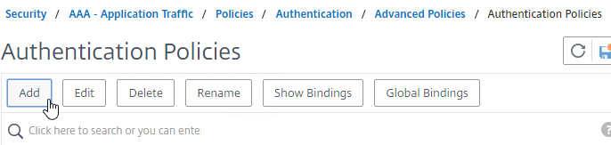
- This policy is for OTP management so name it accordingly.
- Change the Action Type to LDAP.
- Select the Set OTP LDAP Server that has Authentication disabled and OTP Secret configured. This LDAP Action should not have the Search Filter configured.
- Enter HTTP.REQ.COOKIE.VALUE("NSC_TASS").EQ("manageotp") in the Expression box, and click Create.
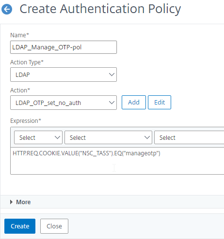
- Create another Authentication Policy.
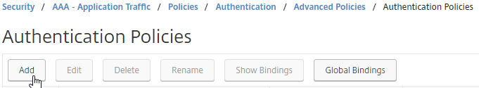
- This policy is for OTP verification so name it accordingly.
- Change the Action Type to LDAP.
- Select the OTP Verification LDAP Server that has Authentication disabled and OTP Secret configured. This LDAP Action should have the Search Filter configured to prevent unenrolled users from authenticating.
- Enter true in the Expression box, and click Create.
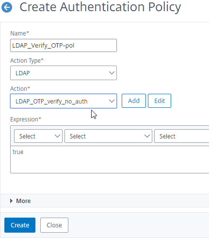
Login Schemas
- Go to Security > AAA - Application Traffic > Login Schema.
- On the right, switch to the Profiles tab, and click Add.
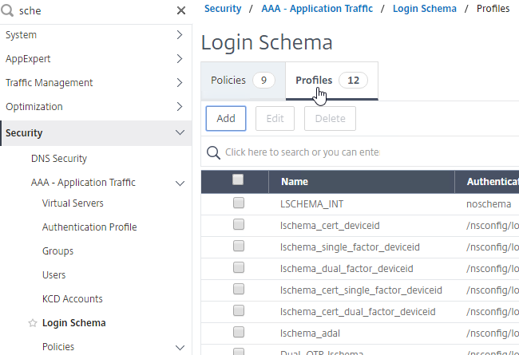
- This is the single factor Login Schema for manageotp so name the Schema accordingly.
- Click the Edit icon.
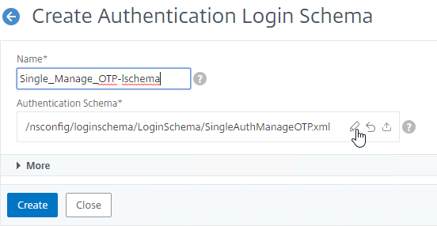
- On the left, click the LoginSchema folder to open it.
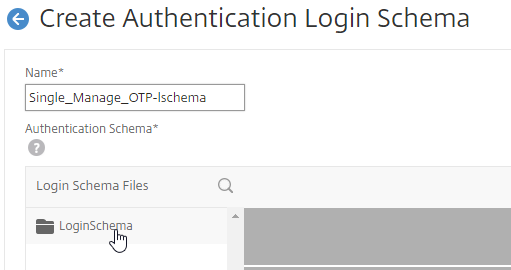
- Scroll down, and click SingleAuthManageOTP.xml to highlight it.
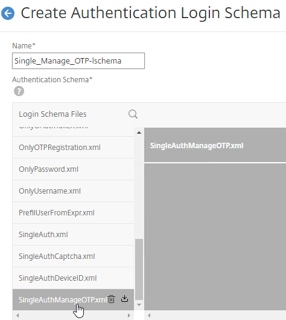
- On the top right, click Select.
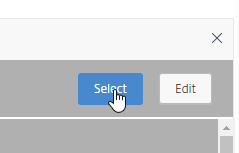
- Click Create.
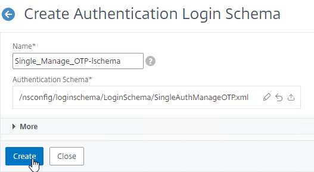
- Add another Login Schema profile.
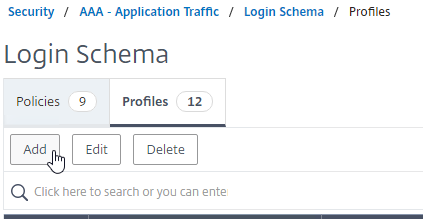
- This Login Schema is for two-factor authentication to NetScaler Gateway so name it accordingly.
- Click the edit icon. Follow the same procedure as above, but this time select /LoginSchema/DualAuth.xml.
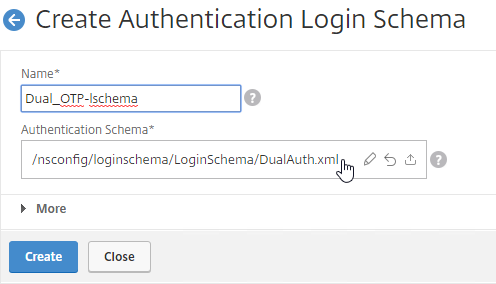
- Click More to reveal more options.
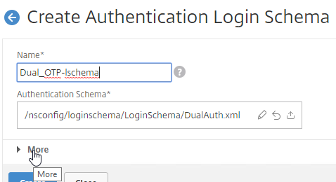
- Scroll down. In the Password Credential Index field, enter 1. This causes nFactor to save the user's password into AAA Attribute #1, which we'll use later in a Traffic Policy to Single Sign-on to StoreFront. If you don't do this, then NetScaler Gateway will try to use the Passcode to authenticate to StoreFront, which obviously won't work.
- Check the box next to Enable Single Sign On Credentials. Mark in the comments indicates that this checkbox is needed to Single Sign On to RDP Hosts.
- Click Create.
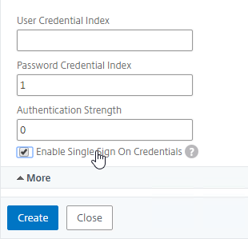
- On the right, switch to the Policies tab.
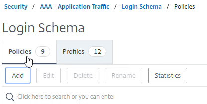
-
Click Add to add a Login Schema policy.
- In the Profile field, select the Single Factor Manage OTP Login Schema Profile.
- Name the Login Schema Policy for OTP management.
-
In the Rule field, enter the following. This ensures that this single factor Login Schema is only used if the user enters /manageotp, and if the user is on the internal network. You don't want manageotp to be accessible externally, because it's only protected by single factor authentication, and it's too easy to add multiple devices.
- Stan Demburg at NetScaler Native OTP – Prevent Enrollment Of Additional Devices Externally at iRangers has a method of preventing external access to manageotp if the user already has a device enrolled.
- Morten Kallesoee at n-Factor – restrictions on native OTP management restricts manageotp if the user already has a device enrolled.
- Click Create.
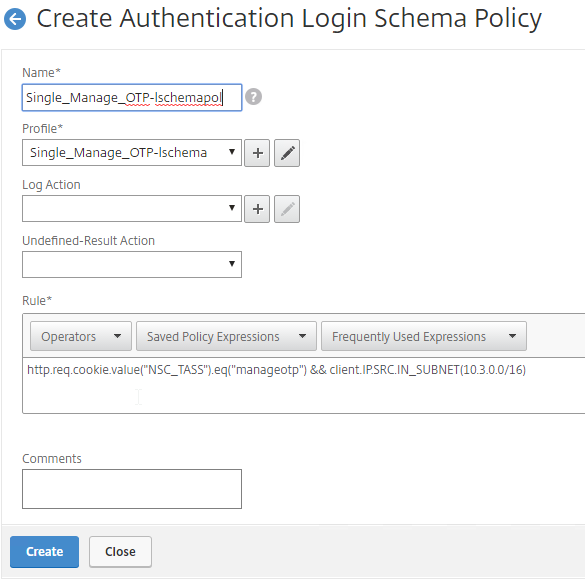
- Click Create.
- Create another Login Schema Policy.
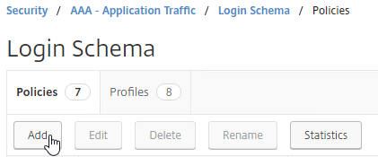
- In the Profile field, select the dual factor Login Schema.
- Name the Login Schema to indicate dual factor authentication.
- In the Rule box, enter true.
- Click Create.
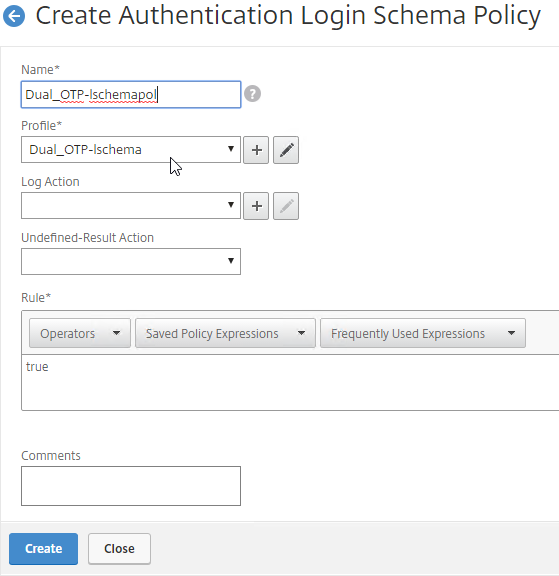
Authentication PolicyLabel
- Go to Security > AAA - Application Traffic > Policies > Authentication > Advanced Policies > PolicyLabel.
- On the right, click Add.
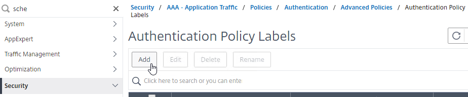
- This PolicyLabel is for OTP management, and OTP verification, so name it accordingly.
- In the Login Schema field, select LSCHEMA_INT, which means noschema.
- Click Continue.
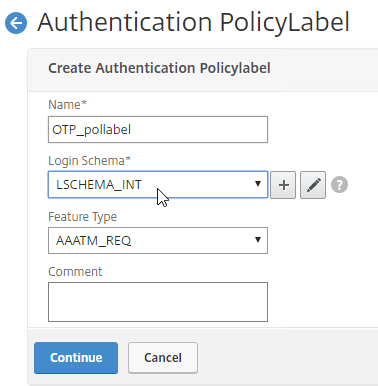
- In the Policy Binding section, Click to select.
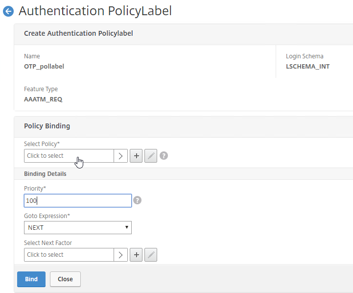
- Click the radio button button next to the Manage OTP LDAP Policy that has authentication disabled, and OTP Secret configured. This one should have a policy expression that limits it to manageotp only. Click Select.
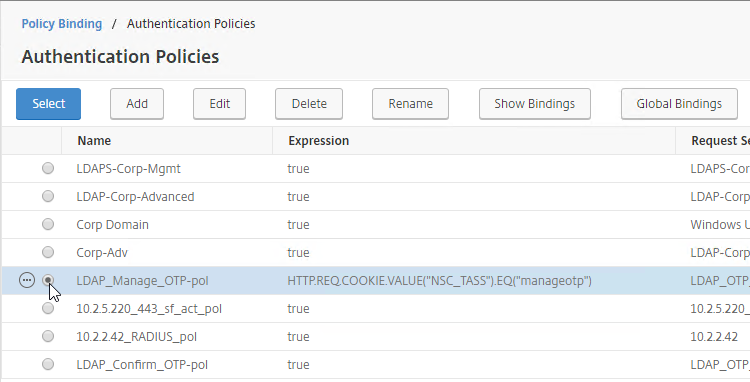
- Click Bind.
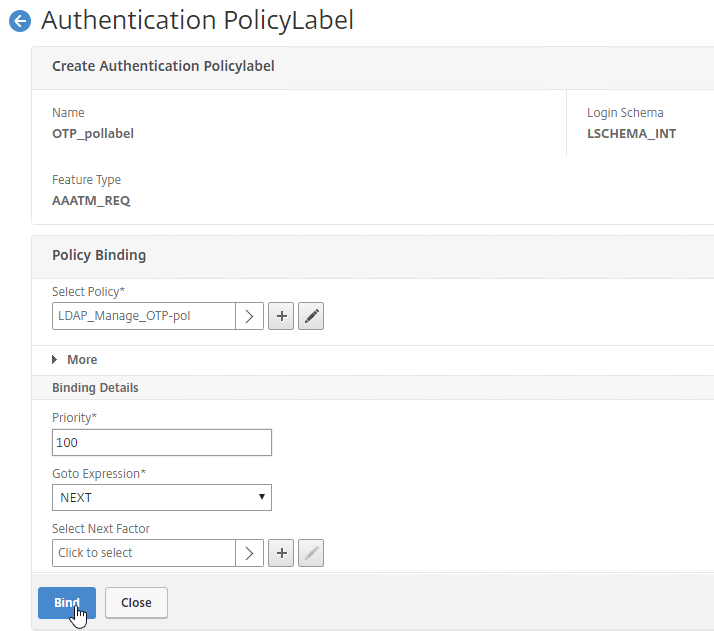
- Click Add Binding to add another one.
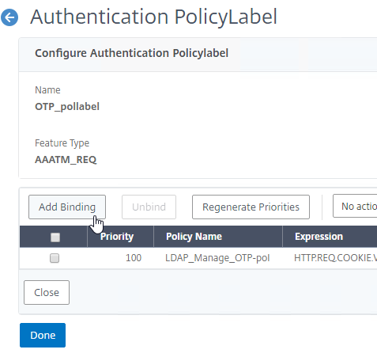
- Click to select.
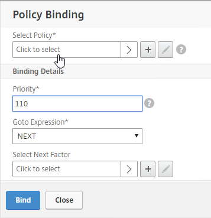
- Click the radio button next to the LDAP Policy that verifies OTP. Click Select.
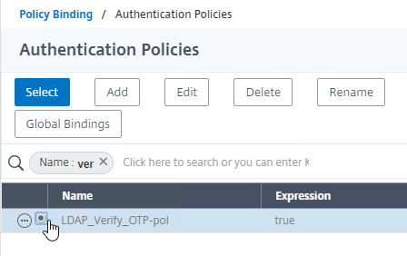
- Click Bind.
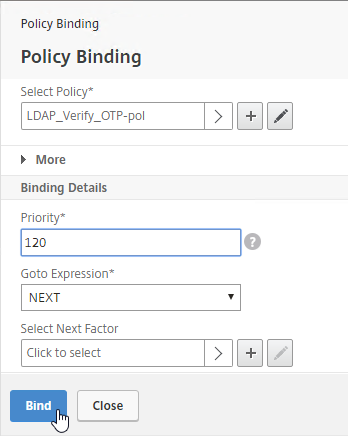
- Make sure the manageotp policy is higher in the list than the OTP Verification policy. To adjust priorities, right-click on the policies, and click Edit Binding. Click Done.
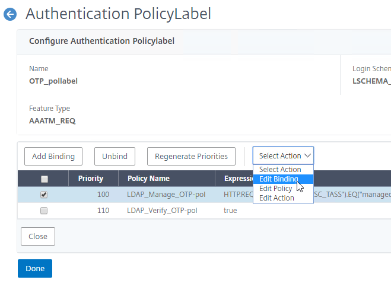
AAA vServer
-
Go to Security > AAA - Application Traffic.
- If the AAA feature is not enabled, then right-click the AAA node, and click Enable Feature.
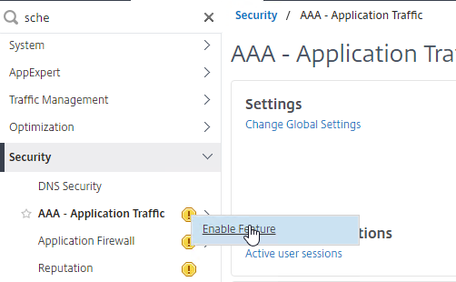
- Go to Security > AAA - Application Traffic > Virtual Servers.
- On the right, click Add.
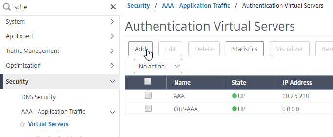
- This AAA vServer is for OTP so name it accordingly.
- Change the IP Address Type to Non Addressable.
- Click OK.
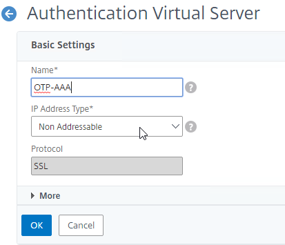
- Click where it says No Server Certificate.
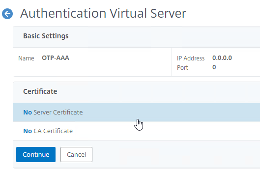
- In the Server Certificate Binding section, click Click to select.
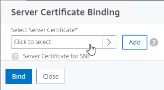
- Click the radio button next to a certificate, and click Select. You can use the same certificate as NetScaler Gateway.
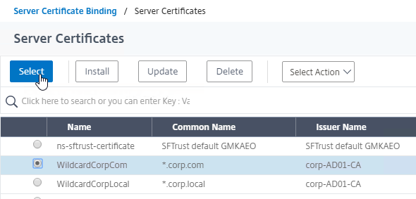
- Click Bind.
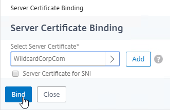
- Click Continue to close the Certificate section.
- In the Advanced Authentication Policies section, click where it says No Authentication Policy.
- Click where it says Click to select.
- Click the radio button next to the normal LDAP Policy that has authentication enabled. Then click the blue Select button.
- In the Select Next Factor field, click where it says Click to select.
- Click the radio button next to the OTP PolicyLabel, and click Select.
- Click Bind.
- In the Advanced Authentication Policies section, click Continue.
- On the right, in the Advanced Settings column, click Login Schemas.
- On the left, scroll down, and click where it says No Login Schema.
- Click where it says Click to select.
- Click the radio button next to the Manage OTP Login Schema, and click Select.
- Click Bind.
- Click where it says 1 Login Schema.
- Click Add Binding.
- Click where it says Click to select.
- Click the radio button next to the dual factor Login Schema, and click Select.
- Click Bind.
- Make sure the single factor Manage OTP Login Schema is higher in the list (lower priority number) than the dual factor Login Schema. Click Close.
- On the right, in the Advanced Settings column, click Portal Themes.
- On the left, scroll down, select RfWebUI as the Portal Theme, and click OK.
- Click Done.
- If the AAA feature is not enabled, then right-click the AAA node, and click Enable Feature.
Traffic Policy for Single Sign-on
- On the left, go to NetScaler Gateway > Policies > Traffic.
- On the right, switch to the Traffic Profiles tab, and click Add.
- This Traffic Profile is for OTP and/or nFactor. Name it accordingly.
- Scroll down.
-
In the SSO Password Expression box, enter the following. This is where we use the Login Schema Password Attribute specified earlier.
-
Click Create.
- On the right, switch to the Traffic Policies tab, and click Add.
- In the Request Profile field, select the Traffic Profile you just created.
- Name the Traffic Policy.
-
In the Expression box, enter true (Default Syntax).
-
If your NetScaler Gateway Virtual Server allows full VPN, change the expression to the following. Source = Julien Mooren at NetScaler – Native OTP is breaking SSL VPN.
-
-
Click Create.
NetScaler Gateway and Authentication Profile
- Go to NetScaler Gateway > Virtual Servers.
- Edit an existing Gateway vServer. If you don't have one, see the other NetScaler Gateway topics on this site.
- Scroll down to the Policies section, and click the plus icon.
- Change the Choose Policy drop-down to Traffic, and click Continue.
- Click to select.
- Click the radio button next to the Traffic Policy you created earlier, and click Select.
- Click Bind.
- On the right, in the Advanced Settings column, click Authentication Profile.
- On the left, scroll down to the Authentication Profile section.
- Click Add to create one.
- Authentication Profile links the NetScaler Gateway vServer with the OTP AAA vServer, so name it accordingly.
- In the Authentication Virtual Server section, Click to select.
- Click the radio button next to the OTP AAA vServer, and click Select.
- Click Create.
- Scroll down again to the Authentication Profile section, and click OK.
- The Portal Theme bound to the Gateway vServer should be RfWebUI, or a derivative.
- Go to System > Profiles.
- On the right, switch to the SSL Profile tab.
- Edit the ns_default_ssl_profile_frontend profile.
- Make sure HSTS is not enabled in the profile, or RfWebUI, and manageotp won't work correctly. This is probably a bug. Note: the Rewrite method of enabling HSTS should work.
Update Content Switching Expression for Unified Gateway
If your NetScaler Gateway Virtual Server is behind a Unified Gateway (Content Switching Virtual Server), then you must update the Content Switching Expression to include the manageotp paths.
- In the NetScaler GUI, navigate to Configuration> Traffic Management > Content Switching > Policies.
- On the right, select the Unified Gateway Content Switching Policy, and then click Edit.
-
Append the following expression under the Expression area, and then click OK.
Manageotp
- Point your browser to https://mygateway.corp.com/manageotp or similar. Simply add /manageotp to the end of your Gateway URL.
- Notice it's only single-factor authentication. Login using normal LDAP credentials.
- Click Add Device.
- Enter a device name, and click Go.
- Launch the Google Authenticator application on your phone. Click the plus icon in Google Authenticator, and scan the QRCode that is shown on the screen.
- Christian in the comments indicated that Microsoft Authenticator also works. Click on plus sign -> other (Google,…).
- Click Test.
- Enter the passcode shown in your Authenticator, and click Go.
- If you logoff of manageotp, and access your Gateway URL normally, you'll be prompted for two-factor authentication. Use the passcodes shown in your Google Authenticator application.
- It should Single Sign-on into StoreFront.
CLI Commands
Here's a complete CLI configuration.
add ssl certKey WildcardCorpCom -cert WildcardCorpCom.pfx -key WildcardCorpCom.pfx -inform PFX -passcrypt "abc"
add authentication ldapAction LDAP-Corp -serverIP 10.2.2.11 -serverPort 636 -ldapBase "dc=corp,dc=local" -ldapBindDn ctxsvc@corp.local -ldapBindDnPassword abc -encrypted -encryptmethod ENCMTHD_3 -ldapLoginName sAMAccountName -groupAttrName memberOf -subAttributeName cn -secType SSL -passwdChange ENABLED -Attribute2 userParameters
add authentication ldapAction LDAP_OTP_set_no_auth -serverIP 10.2.2.11 -serverPort 636 -ldapBase "dc=corp,dc=local" -ldapBindDn admin@corp.local -ldapBindDnPassword abc -encrypted -encryptmethod ENCMTHD_3 -ldapLoginName sAMAccountName -groupAttrName memberOf -subAttributeName cn -secType SSL -authentication DISABLED -OTPSecret UserParameters
add authentication ldapAction LDAP_OTP_verify_no_auth -serverIP 10.2.2.11 -serverPort 636 -ldapBase "dc=corp,dc=local" -ldapBindDn admin@corp.local -ldapBindDnPassword abc -encrypted -encryptmethod ENCMTHD_3 -ldapLoginName sAMAccountName -searchFilter "userParameters>=#@" -groupAttrName memberOf -subAttributeName cn -secType SSL -authentication DISABLED -OTPSecret UserParameters
add authentication Policy Corp-Adv -rule true -action LDAP-Corp
add authentication Policy LDAP_Manage_OTP-pol -rule "HTTP.REQ.COOKIE.VALUE(\"NSC_TASS\").EQ(\"manageotp\")" -action LDAP_OTP_set_no_auth
add authentication Policy LDAP_Confirm_OTP-pol -rule true -action LDAP_OTP_verify_no_auth
add authentication loginSchema Dual_OTP-lschema -authenticationSchema "/nsconfig/loginschema/LoginSchema/DualAuth.xml" -passwordCredentialIndex 1
add authentication loginSchema Single_Manage_OTP-lschema -authenticationSchema "/nsconfig/loginschema/LoginSchema/SingleAuthManageOTP.xml"
add authentication loginSchemaPolicy Single_Manage_OTP-lschemapol -rule "http.req.cookie.value(\"NSC_TASS\").eq(\"manageotp\") && client.IP.SRC.IN_SUBNET(10.3.0.0/16)" -action Single_Manage_OTP-lschema
add authentication loginSchemaPolicy Dual_OTP-lschemapol -rule true -action Dual_OTP-lschema
add authentication policylabel OTP_pollabel -loginSchema LSCHEMA_INT
bind authentication policylabel OTP_pollabel -policyName LDAP_Manage_OTP-pol -priority 100 -gotoPriorityExpression NEXT
bind authentication policylabel OTP_pollabel -policyName LDAP_Confirm_OTP-pol -priority 110 -gotoPriorityExpression NEXT
add authentication vserver OTP-AAA SSL 0.0.0.0
bind ssl vserver OTP-AAA -certkeyName WildcardCorpCom
bind authentication vserver OTP-AAA -portaltheme RfWebUI
bind authentication vserver OTP-AAA -policy Single_Manage_OTP-lschemapol -priority 100 -gotoPriorityExpression END
bind authentication vserver OTP-AAA -policy Dual_OTP-lschemapol -priority 110 -gotoPriorityExpression END
bind authentication vserver OTP-AAA -policy Corp-Adv -priority 100 -nextFactor OTP_pollabel -gotoPriorityExpression NEXT
add vpn trafficAction OTP-trafficprofile http -passwdExpression "http.REQ.USER.ATTRIBUTE(1)"
add vpn trafficPolicy OTP-trafficpol true OTP-trafficprofile
add authentication authnProfile OTP-authnprofile -authnVsName OTP-AAA
add vpn vserver Gateway.corp.com SSL 10.2.5.220 443 -downStateFlush DISABLED -Listenpolicy NONE -authnProfile OTP-authnprofile
set ssl vserver Gateway.corp.com -sslProfile ns_default_ssl_profile_frontend
add vpn sessionAction "Receiver For Web" -transparentInterception OFF -defaultAuthorizationAction ALLOW -SSO ON -icaProxy ON -wihome "https://storefront2.corp.com/Citrix/StoreWeb" -ntDomain corp.local -clientlessVpnMode OFF -storefronturl "https://storefront2.corp.com"
add vpn sessionPolicy "Receiver For Web" "HTTP.REQ.HEADER(\"User-Agent\").CONTAINS(\"CitrixReceiver\").NOT" "Receiver For Web"
bind vpn vserver Gateway.corp.com -portaltheme RfWebUI
bind vpn vserver Gateway.corp.com -policy "Receiver For Web" -priority 100 -gotoPriorityExpression NEXT -type REQUEST
bind vpn vserver Gateway.corp.com -policy OTP-trafficpol -priority 100 -gotoPriorityExpression END -type REQUEST
bind ssl vserver Gateway.corp.com -certkeyName WildcardCorpCom